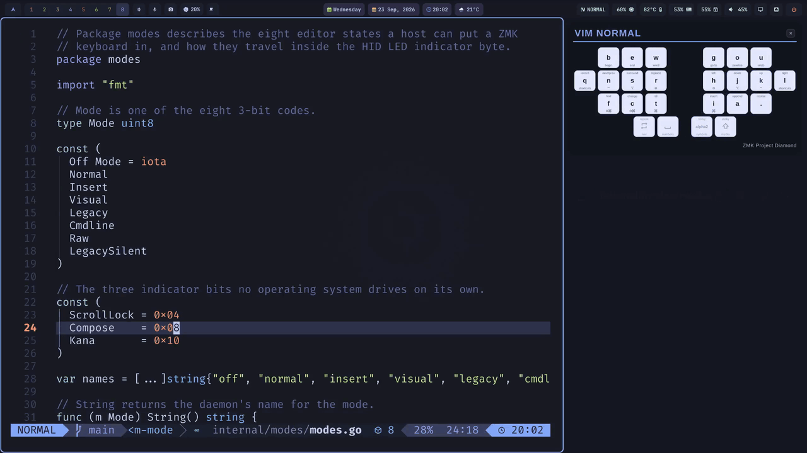
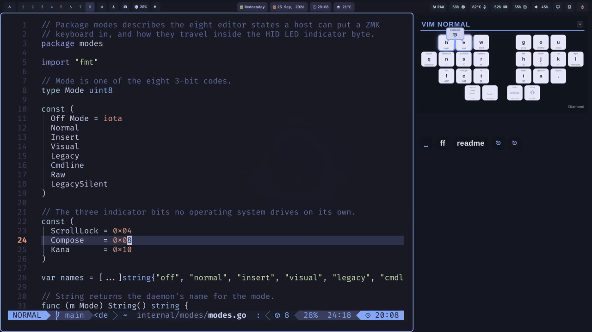

:help zmk-vim-mode
Your keyboard knows which vim mode you're in.
zmk-vim-mode keeps a ZMK keyboard's layers in sync with the editor's real vim state, so the keyboard is in NORMAL when the editor is in normal mode, in INSERT when you are typing, and out of vim layers entirely when keys must pass through untouched. Stock vim, no remaps: the editor tells the keyboard, and the keyboard changes layers.
$ curl -fsSL https://raw.githubusercontent.com/rafaelromao/zmk-vim-mode/main/install.sh | sh
h j k l sit under the right hand. Nothing in vim was
remapped.Stock vim, on any layout
zmk-vim-mode-whyhjkl sits on QWERTY's home row by accident of history. Move to a modern
alternative layout and those four letters scatter. On Gallium, for instance,
j and k share the right index finger's inner column and
l moves to the left hand:
b l d c v j y o u , n r t s g p h a e i x q m w z k f ' ; .
Colemak, Dvorak and Graphite each scatter them differently; none of them keeps the row. Remapping vim to match means fighting every plugin, tutorial and machine you ssh into; learning the scattered positions makes your layout worse at the thing you do most.
A vim layer removes the compromise. While the editor is in normal mode the keyboard is issuing commands, not typing letters, so that layer can be a map chosen for how vim is actually used:
- motions on the home row,
h j k lunder your strongest fingers, whatever your base layout does with those letters; - operators under the other hand, so
d,y,c,vare one comfortable key each; - two-key commands as one key:
dd,yy,ggas macros,^D/^Uwith no modifier; - prime positions for
:and/, far more frequent than;or'in normal mode.
None of it costs you anything while typing: the layer is gone the moment the editor goes back to insert.
Vim itself needs no configuration. The keyboard sends real
h, j, k, l keycodes; the layer only
decides which physical key produces them. There is no noremap to maintain,
nothing that breaks when a plugin expects dw to work, and nothing to install
on the servers you ssh into.
The hard part is knowing which mode the editor is in. A keyboard that guesses from
keystrokes goes wrong as soon as a plugin, a mouse click or :startinsert
changes the mode behind its back. zmk-vim-mode asks the editor instead, and tells the
keyboard.
Try it: this page has a vim mode
zmk-vim-mode-tryPress Esc, then h j k l.
i to type, v to select, : for the command line, and
watch the board change layers. OFF is the keyboard with vim mode off, as in any app that
isn't vim: the base layout and nothing else. :q gets you there, and
Esc turns vim mode back on. On a touch screen, use the buttons. Pick the
layout you type on under base, then compare OFF with NORMAL: each base puts
h j k l somewhere else, and NORMAL puts them under the same four fingers
every time.
- wmotion
- jh j k l
- ienters INSERT
- venters VISUAL
- :opens the command line
- dVISUAL's own keys
The board is the 34-key example keymap in
docs/example-keymap.md:
a Gallium base with home-row mods, and the four vim layers. Its NORMAL layer puts
h j k l under the four fingers of the right home row, w e b above
them and : beside them, and makes dd, yy and
gg single keys.
The other bases are every layout in the table of Pascal Getreuer's guide to alt keyboard layouts, and the author's Romak in its 34-key version. The board is column-staggered, so each layout is in its column-staggered version, and Stand, published only for row stagger, loses its angle mod. Swapping the base changes nothing else: the vim layers name keycodes, not positions.
This page is guessing its mode from your keys, with the same table a keyboard uses for an editor that cannot report its mode. With zmk-vim-mode the keyboard does not have to guess: the editor says it.
A real config. The author's
keyboards repo is the one in the
video: the 24-key Diamond on the Romak layout, with zmk-vim-mode as a submodule and its
vim_sync node in
zmk/features/vim.dtsi.
It goes further than the example: six vim layers, among them change and replace layers of
its own.
Keys on this page
| move | j k scroll, gg G top and bottom, { } previous and next section |
|---|---|
| modes | i a o c s R INSERT, v VISUAL, : / ? the command line, Esc NORMAL, :q or ZZ OFF (vim closed, no vim layers) |
| search | /text or ?text, then n N for the next and previous match |
| commands | :help {topic} jumps to why, try, modes, editors, how, install or bar; :set background=light or dark; :github |
One mode at a time
zmk-vim-mode-modesThe daemon picks one mode at a time, from the focused app and what its editor reports, and the keyboard switches layers to match:
| mode | when | the keyboard |
|---|---|---|
| normal | the editor is in normal mode | VIM_NORMAL |
| insert | typing (Neovim's Replace counts as insert) | VIM_INSERT, usually transparent: your base layout |
| visual | selecting | VIM_VISUAL on top of VIM_NORMAL |
| cmdline | typing a : command or a search | VIM_CMDLINE |
| raw | the letters are commands of something else: a file explorer, a picker's result list, a terminal job, a pending <leader> | no vim layers: keys pass through untouched |
| legacy | a vim-like app that reports nothing, such as an IDE without its plugin | VIM_NORMAL, and the keyboard follows the mode itself |
| off | any other app | no vim layers |
zmk-vim-mode status shows the current mode and why, and
zmk-vim-mode set <mode> overrides it by hand.
Four editors report their exact mode
zmk-vim-mode-editorsNeovim, VS Code with vscode-neovim, IntelliJ with IdeaVim and Obsidian with vim key bindings tell the daemon their exact mode. Any other vim-like app works too, with the keyboard following the mode itself.
Neovim, and raw
The plugin reports Neovim's effective mode over a unix socket, and it knows when a letter
is not a vim command at all. Dashboards, file explorers (neo-tree, NvimTree, oil, the snacks
explorer), picker result lists, lazy, mason and trouble, :terminal job mode and
a pending <leader> all report raw: no vim
layers, so the keys reach them untouched. Without it, the NORMAL layer would remap those
letters and the UI would be unusable.

j j k move the tree and the bar at the top reads RAW. Closing it brings
NORMAL back.make install writes this lazy.nvim spec when your config has none, and never
touches an existing one:
-- ~/.config/nvim/lua/plugins/zmk-vim-mode.lua
return {
{
"rafaelromao/zmk-vim-mode",
lazy = false,
vscode = true, -- LazyVim disables every other plugin inside vscode-neovim
opts = {},
},
}Every option has a working default; these three are shown with theirs.
:ZmkVimMode status shows the socket, the connection, the state last sent and
whether a leader or VS Code hint is active. The full list is in the
README.
opts = {
terminal_state = "raw", -- what :terminal job mode reports; "insert" keeps the vim layers there
leader_raw = true, -- raw while a <leader> sequence is pending (which-key menus)
debug = false, -- log every state change with vim.notify
},VS Code
vscode-neovim runs a real
Neovim inside VS Code, which loads your config, which loads the same plugin, so the mode
is exact. No extension API reports focus moving to the terminal or the sidebar, so the
window title carries a [${focusedView}] marker. A companion extension covers
quick inputs, and on Linux the accessibility bus catches whatever you open with the
mouse.
zmk-vim-mode install --vscode, part of make install.
VSCodeVim reports no modes, so it has to be vscode-neovim.
More
IntelliJ
Its plugin subscribes to IdeaVim's mode listener. The terminal and the consoles are editors too, so the plugin tells them apart by kind and reports them as raw.
zmk-vim-mode install --intellij builds the plugin against your
IDE, and needs IdeaVim.
More
Obsidian
Obsidian runs CodeMirror's vim, and its plugin listens to that. The : dialog
is the command line, exactly as in Neovim. Reading view has no vim at all, so the
keyboard goes back to the base layer.
zmk-vim-mode install --obsidian; if Obsidian was running,
enable ZMK Vim Mode under Community plugins.
More
Everything else
A vim-like app that reports nothing, such as a JetBrains IDE without the plugin, gets
legacy: the keyboard turns NORMAL on and follows the mode
itself, from the keys that change it. For what nothing can detect, like vim over ssh or a
shared screen, zmk-vim-mode set pins the mode by hand, and setting the same
mode again hands it back to the daemon. A combo on the keyboard can do the same from the
other end: it turns NORMAL on and
tells the host,
and cancel hands the mode back.
Three LED bits no OS drives on its own
zmk-vim-mode-howThe editor knows its mode, so the editor says it. Three parts carry it: a plugin in the editor, a daemon on the host, and a module in the keyboard's firmware. Everything is in this repository:
| part | path | role |
|---|---|---|
| ZMK module | firmware/, zephyr/ | decodes the mode on the keyboard and switches layers |
| host daemon | cmd/, internal/ | decides the mode from the focused app and the editors, and writes it to the keyboard |
| Neovim plugin | lua/, plugin/ | reports Neovim's effective mode over a unix socket |
| editor plugins | editors/ | the VS Code companion and the Obsidian and IntelliJ plugins, speaking the same protocol |
| status bar indicators | bars/ | show the mode in the macOS menu bar or the Omarchy bar |
The channel between host and keyboard is one every keyboard already has. A HID keyboard
has an output report, a byte the host sends to it to light the Caps Lock and Num
Lock lamps. It is the only standard host-to-keyboard channel that works identically over
USB and Bluetooth with stock ZMK, needs no pairing or custom protocol, and requires nothing
of the firmware beyond CONFIG_ZMK_HID_INDICATORS=y.
ZMK declares five indicator bits, which your own keyboard's report descriptor confirms:
05 08 19 01 29 05 75 01 95 05 91 02
│ │ │ │ │ └─ output: data, variable, absolute
│ │ │ │ └──────── five of them
│ │ │ └─────────────── one bit each
│ │ └────────────────────── usage max = Kana (0x05)
│ └───────────────────────────── usage min = Num Lock (0x01)
└──────────────────────────────────── usage page = LEDThree of those five are free, as long as the operating system never sets Compose, Kana or Scroll Lock. Num Lock and Caps Lock are left alone, because the OS owns them. The three free bits are read as one 3-bit number:
| code | state | Scroll · Kana · Compose | byte | keyboard |
|---|---|---|---|---|
| 0 | off | · · · | 0x00 | no vim layers |
| 1 | normal | · · ● | 0x08 | VIM_NORMAL |
| 2 | insert | · ● · | 0x10 | VIM_INSERT (Neovim's Replace maps here too) |
| 3 | visual | · ● ● | 0x18 | VIM_NORMAL + VIM_VISUAL |
| 4 | legacy | ● · · | 0x04 | vim-like app with no mode feed; the keyboard infers modes itself |
| 5 | cmdline | ● · ● | 0x0c | VIM_CMDLINE |
| 6 | raw | ● ● · | 0x14 | no vim layers: keys pass through untouched |
| 7 | legacy silent | ● ● ● | 0x1c | same state as 4, re-asserted without re-injecting Esc |
The lamps stay dark: unless the keymap has a zmk,indicator-leds node, nothing
physically lights up. It is a silent side channel that happens to travel on the LED wire.
On Linux, pressing i in Neovim travels like this (macOS writes through IOKit
instead):
nvim ModeChanged ──► plugin ──► unix socket ──► daemon
│ decides code 2 (insert)
▼
write [0x01, 0x10] to /dev/hidrawN
│ report id, LED byte
kernel ──► USB SET_REPORT / BLE GATT write
▼
ZMK zmk_hid_indicators_process_report()
▼
event: zmk_hid_indicators_changed
▼
this module: decode 0x10 → code 2
▼
deactivate the managed layers, activate VIM_INSERTThe firmware side does no scanning and types no keys: it tests three bits, rebuilds the integer, and if it differs from the last one, switches the layer set. The keyboard keeps its own local inference and the host only corrects it, with two timing rules that keep the hybrid honest:
- OFF hold-off, 60 ms. When the kernel sends its own LED report, it sends the whole byte and zeroes these bits, so code 0 applies only after it has been stable for 60 ms. The daemon rewrites within about a millisecond, and the blip never reaches your layers.
- Local guard, 150 ms. A host code describes the editor as of an earlier keystroke. After any keyboard-driven layer change, host codes are parked and only the newest is applied, so a stale one cannot undo a fast Esc i. The keyboard wins in motion, the host wins at rest.
Quick start
zmk-vim-mode-installYou need:
- A ZMK keyboard whose firmware you build, from a zmk-config of your own, locally or with GitHub Actions. USB and Bluetooth both work. On a split keyboard only the central half, or the dongle, needs the module.
- macOS or Linux. On Linux, following the focused window needs Hyprland (Omarchy ships it); under another compositor the daemon still runs, but only editors with a plugin report their mode.
- Go 1.26 or newer and
maketo build the daemon; on macOS also the Xcode Command Line Tools, for cgo. - An editor: Neovim, VS Code with vscode-neovim, Obsidian with vim key bindings, or IntelliJ with IdeaVim.
-
The keyboard
zmk-vim-mode is a Zephyr module. Add it to
config/west.ymlin your zmk-config, next to ZMK itself:manifest: remotes: - name: zmkfirmware url-base: https://github.com/zmkfirmware - name: rafaelromao url-base: https://github.com/rafaelromao projects: - name: zmk remote: zmkfirmware revision: main import: app/west.yml - name: zmk-vim-mode remote: rafaelromao revision: main self: path: configThen four layers and one node in your keymap. The layers may be entirely
&transto begin with: nothing breaks while they are empty. Keep them below your other layers, so a held nav key still works.#include <dt-bindings/zmk/hid_usage.h> #define BASE 0 #define VIM_NORMAL 1 #define VIM_VISUAL 2 #define VIM_INSERT 3 #define VIM_CMDLINE 4 / { vim_sync { compatible = "zmk,hid-indicator-code-listener"; indicators = <HID_USAGE_LED_COMPOSE HID_USAGE_LED_KANA HID_USAGE_LED_SCROLL_LOCK>; managed-layers = <VIM_NORMAL VIM_VISUAL VIM_INSERT VIM_CMDLINE>; normal { code = <1>; layers = <VIM_NORMAL>; }; insert { code = <2>; layers = <VIM_INSERT>; }; visual { code = <3>; layers = <VIM_NORMAL VIM_VISUAL>; }; legacy { code = <4>; layers = <VIM_NORMAL>; bindings = <&kp ESC>; }; cmdline { code = <5>; layers = <VIM_CMDLINE>; }; raw { code = <6>; }; legacy_silent { code = <7>; layers = <VIM_NORMAL>; }; // code 0 is implicit: every managed layer off. }; };Build and flash (on a split, the central half or the dongle). The keyboard setup explains each part, docs/example-keymap.md is a complete keymap built this way, and the author's keyboards repo is a real config that uses it, with the node in zmk/features/vim.dtsi.
-
The computer
$ curl -fsSL https://raw.githubusercontent.com/rafaelromao/zmk-vim-mode/main/install.sh | shThat fetches the latest release into
~/.local/share/zmk-vim-modeand runsmake installthere: it builds the daemon from source (with Go,make, and on macOS the Xcode Command Line Tools), runs it as a user service, and sets up the editors and the status bar it finds. From a clone,make installdoes the same. On macOS, add the daemon under Input Monitoring and Accessibility: both panes open at the end of the install. Then runzmk-vim-mode restart, so the daemon picks the grants up. -
Check, then drive it by hand
$ zmk-vim-mode doctor $ zmk-vim-mode set normal # the keyboard switches to its NORMAL layer $ zmk-vim-mode set auto # back to following the editorThen open Neovim and press i, Esc and v: the keyboard's layers follow.
doctorprints a fix for each problem it finds, and the troubleshooting tables cover the rest.
The mode, where you can see it
zmk-vim-mode-barA status bar indicator shows the mode the keyboard is in: NORMAL, INSERT, VISUAL, CMDLINE,
VIM (legacy) or RAW behind a Neovim glyph, VIM ? while the daemon is down, and
nothing at all while vim mode is off. It is the decision the keyboard just acted on, not a
second guess at it.
- macOS menu bar: a Hammerspoon
Spoon,
zmk-vim-mode install --hammerspoon. It also passes on the chords a keymap sends when vim mode is entered or left by hand, which Hyprland binds on Linux. - Omarchy bar: a bar widget plugin,
zmk-vim-mode install --omarchy. - Any other bar:
zmk-vim-mode status --barprints the same answer as one Waybar-style JSON line.
make install sets up whichever of the first two it finds. A Waybar module,
for instance:
"custom/vim-mode": {
"exec": "zmk-vim-mode status --bar",
"return-type": "json",
"interval": 1,
"format": " {}"
}